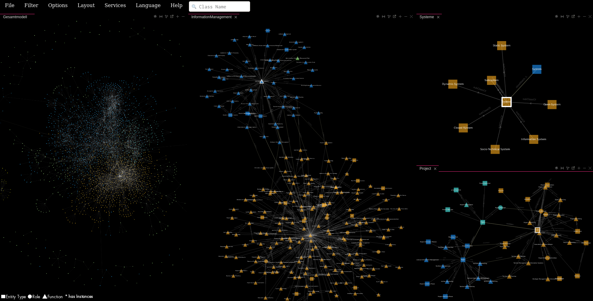

SNIK Graph Troubleshooting

"Javascript is off."
SNIK Graph does not work without JavaScript. Please ensure that JavaScript
is enabled
.
Some features are not working or are not displayed correctly
SNIK Graph uses modern web technologies such as ECMAScript modules, so please ensure that your browser is up to date. Current versions of Firefox, Chrome,
Edge and Safari work. Internet Explorer is not supported. If you still encounter errors,
please submit a bug report
.
Mobile
SNIK Graph is not optimized for Smartphones and Tablets, as such both the controls and performance may be unsatisfactory. Feel free to
contribute
if you want to improve that.
Submit a Bug Report
If you encounter a technical problem that is not addressed here, please
view the list of known issues
and if it is not listed there,
submit a bug report
. Always state your browser name, version and operating system, such as "Firefox 50.0.2, openSUSE Leap".
Disclaimer
SNIK Graph is a research prototype developed part-time by a single researcher who is not a JavaScript expert and as such does not undergo the extensive
testing and development of big projects. As such,
contributions
and suggestions are always appreciated. However, HTML5 and modern ECMAScript are used by choice and we will not approve changes that compromise the clarity
or size of the source code by adding compatibility layers for outdated browser versions.